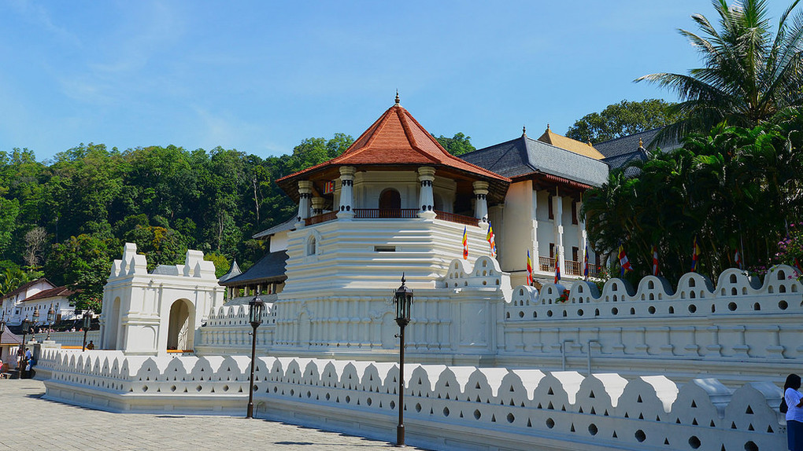

Kandy City

Kandy is both an administrative and religious city and is also the capital of the Central Province and this is also the second largest city in SriLanka. Kandy is the home of The Temple of the Tooth Relic (Sri Dalada Maligawa), one of the most sacred places of worship in the Buddhist world. It was declared a world heritage site by UNESCO in 1988. The city of Kandy lies at an elevation of 465 metres (1,526 ft) above sea level. Its plan developed around two open spaces: an elongated square, at the end of which are the administration buildings of the old capital, and an artificial lake that is quadrangular in form. A public garden adds to the openness of the city's spatial organization. Kandy has now grown out to encompass Peradeniya, home to the University of Peradeniya and the Botanical Gardens, Katugastota to the north, and east to Kundasale, Tennekumbura and Gurudeniya.
Kandy was established first by Wikramabahu-3 and he was the monarch of the Kingdom of Gampola, north of the present city, and named Senkadagalapura at the time.Also Sena Sammatha Wikramabahu was the first king in kingdom of kandy. After that Jayaweera Bandara (1511–1551), Karaliyadde Bandara (1551–1581), Rajasinha I, Vimaladharmasuriya I conducted the Kingdom in order. Finally Weera Parakrama Narendrasinghe administrated the kingdom as the last Sinhala king in SriLanka. Then administration of the kingdom changed to Nayakkar Dynasty and then Sri Wijaya Rajasinghe, Keeerthi Sri Rajasinghe and Sri Wikrama Rajasinghe conducted the kingdom respectively.
The month of August in every year a religious and very attractive event is held in Kandy city. That is Asala Perahara.This is the largest perahara which is organized in SriLanka. Malwaththa and Asgiriya Chapters lead to this event and Diyawadana Nilame supervises all the activities and organizing affairs of perahara. He also walks along the road with perahara front of the elephant which takes the sacred tooth relic. By today Nadungamuwe Raja has been got that lucky chance to takes the tooth relic and walk around the Kandy City with perahara.